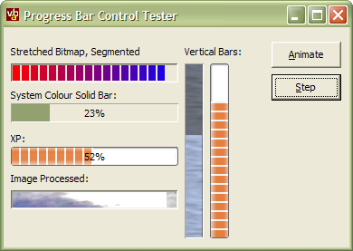

VB5 Progress Bar Control Demonstration (25K)
VB5 Progress Bar Control Demonstration (25K)
 VB5 Progress Bar Control Source Code (61K)
VB5 Progress Bar Control Source Code (61K)
 VB5 Progress Bar Control (20K)
VB5 Progress Bar Control (20K)
 VB6 Progress Bar Control Demonstration (24K)
VB6 Progress Bar Control Demonstration (24K)
 VB6 Progress Bar Control Source Code (61K)
VB6 Progress Bar Control Source Code (61K)
 VB6 Progress Bar Control (20K)
VB6 Progress Bar Control (20K)
 19 Dec 2002
19 Dec 2002
First Posted

vbAccelerator Progress Bar Control
A lightweight progress bar with
This control provides a highly flexible Progress Bar control with an array of drawing styles, including XP Style, segmented/non-segmented, bitmap bars and backgrounds and more. Alternatively, if you don't want the convenient packaging and design-time property settings provided by a control, you can also get the same code as class.
Implementing a Progress Bar
The progress bar that is normally supplied with Windows is exposed by ComCtl32.DLL. Whilst this control is fine for the normal progress bar tasks, it isn't very customisable: for example, it is difficult to draw text on the bar without hacking the WM_PAINT message, and you only get the standard system colours and a segmented bar unless you have a newer version of the DLL.
For this reason, the vbAccelerator Progress Bar control has been implemented from scratch as a custom VB control. This allows the implementation of all kinds of new drawing styles and customising whilst still allowing emulation of the system progress bar styles.
vbAccelerator Progress Bar Control
The progress bar control has these properties which affect the styles:
- XPStyle
When set, the bar draws with the current system XP Theme. This style uses the XP Styles API exposed through UxTheme.DLL, which means it will only have an effect on XP systems. If the system doesn't support XP styles, or if there is no theme applied, then the drawing will fall through to the standard drawing techniques. If a theme is applied, then all other style settings are overridden. - Segments
Determines whether the bar portion is split into segements or not. - Appearance and Border
Set the style of the border draw around the progress bar.
If XPStyle is not set, you can then modify the background and foreground properties of the progress bar using BackColor, ForeColor, Picture and BackPictureMode for the background, then equivalently BarColor, BarForeColor, BarPicture and BarPictureMode for the foreground. The two Mode settings allow you to set whether the picture is stretched or tiled into the control. You can also image process a picture loaded as the background or the bar to modify its luminance (brightness) or saturation (unsaturated colours are greyer, saturated colours are brighter) using ModifyPicture and ModifyBarPicture.
To show text on the progress bar, set TextAlignX and TextAlignY to set the horizontal and vertical position of the text, then set the text to display using the Text property.
.No Need For a Control
Since the progress bar doesn't particularly interact with a user, it can also be used as a class module. The only things you loose by including the code as a class are persistence of properties and packaging, but you make it easier to distribute your project. Check out the article "Progress Bar Class" for a demonstration.